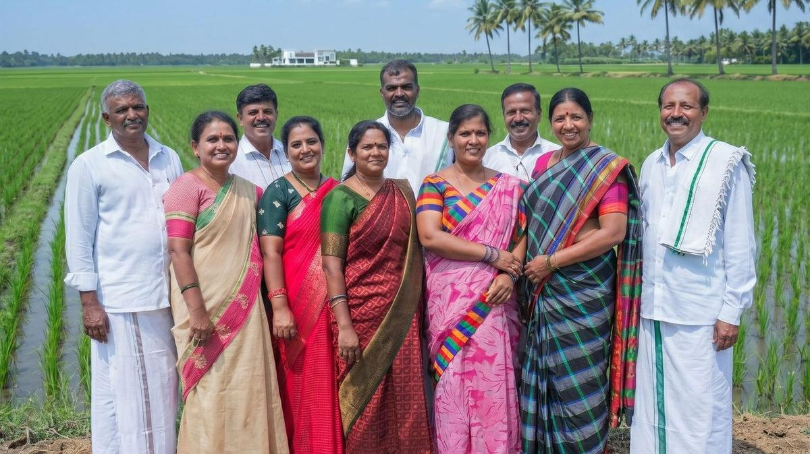
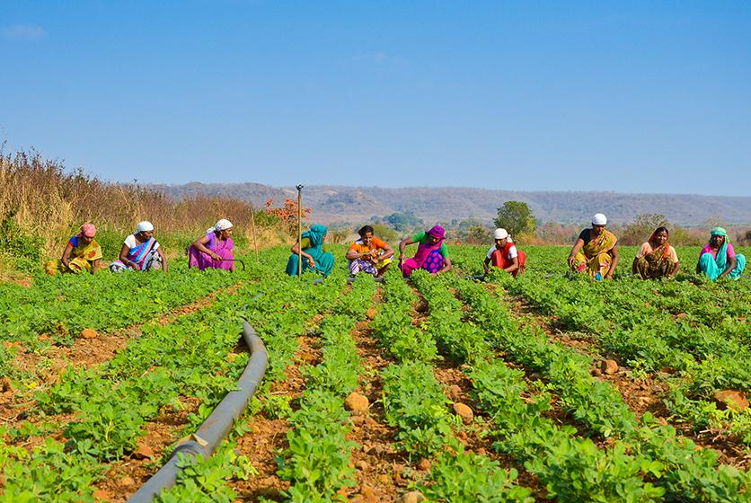
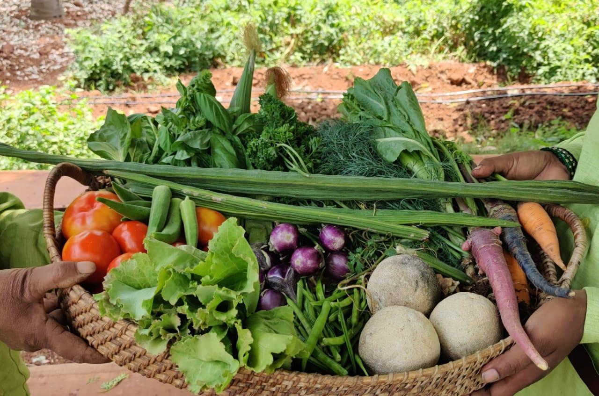
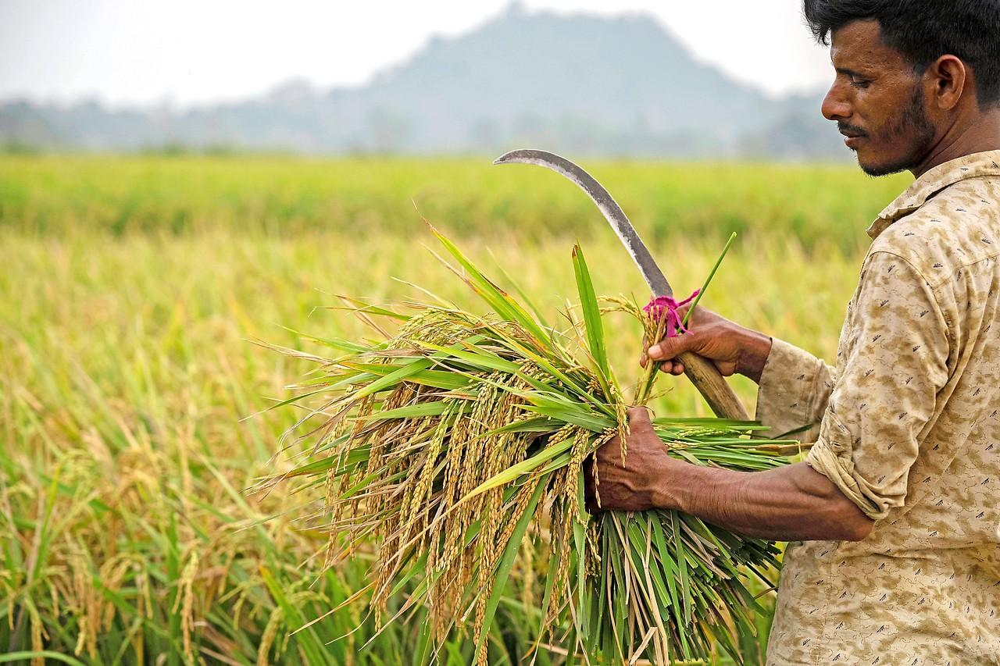
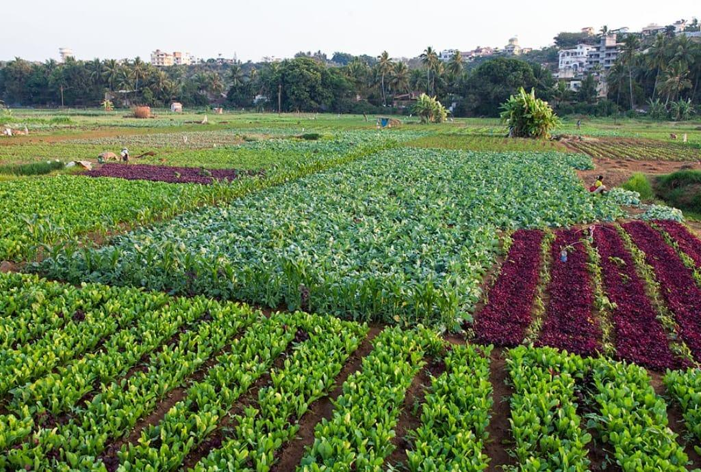
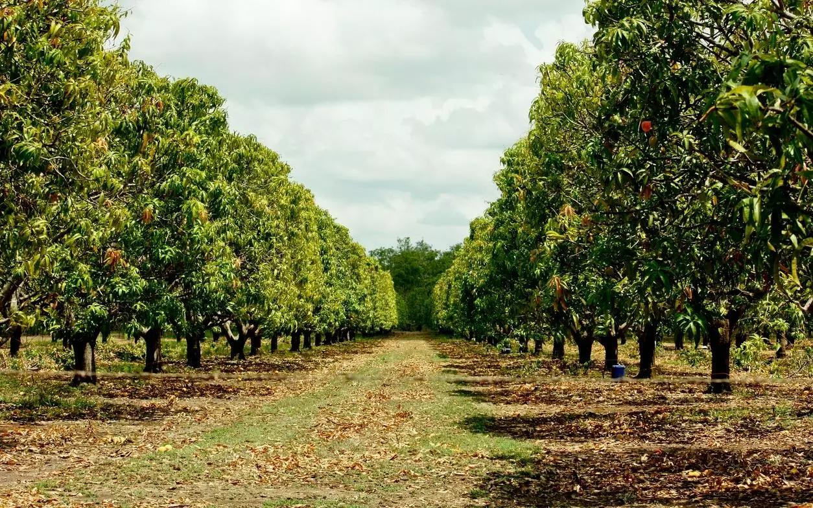
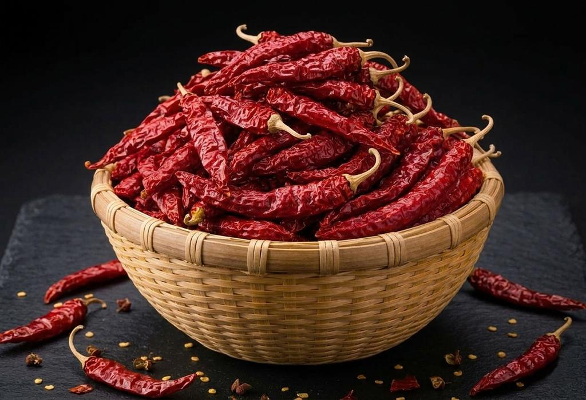
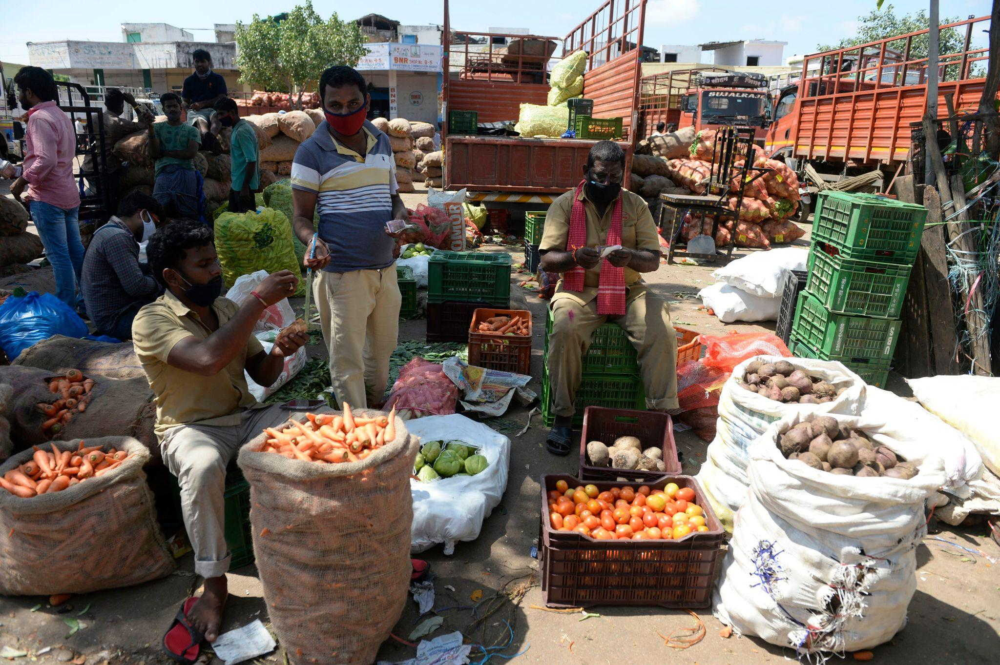

WHERE FARMERS GROW,
OPPORTUNITIES FOLLOW.
A connected agricultural community working towards better sourcing, stronger partnerships, and meaningful market opportunities across regional farming clusters in India.
HOW COLLECTIVE FARMING IS TRANSFORMING LOCAL FAMILIES
Indian agriculture is sustained by the dedication of smallholder farming families who nurture the soil across seasons. Here is how collective organization transforms their future.

Farmer Directors Guiding Local Operations & Fair Decisions
Unlike corporate agribusinesses, FARMVEST is governed directly by its member farmers. Our board of directors consists of practicing cultivators representing distinct village clusters.
Every major procurement policy, minimum floor price calculation, and reinvestment in community infrastructure is voted on democratically, ensuring that farmers retain the full economic value created from their labor.

Empowering Women Farmers & Self-Help Groups
Women form the backbone of Indian farm labor and post-harvest care. FARMVEST actively partners with women's Self-Help Groups (SHGs) to provide dedicated training in precision horticulture, organic composting, and seed preservation.
Through dedicated women-led producer groups, member women hold independent share capital, receive direct bank payments, and lead regional sorting facilities.
HOW OUR VILLAGE HUBS REACH WHOLESALE BUYERS NATIONWIDE
Click on any operational stage below to explore how FARMVEST ensures speed, transparency, and product integrity from rural fields to commercial buyers.

01. Smallholder Farmer Collectives
Over 12,000 member farmers organized into village-level Farmer Interest Groups (FIGs) adopting sustainable practices, pooled resource management, and direct market participation.
- Decentralized village clusters with local leadership
- Direct bank settlements and zero intermediary deductions
- Subsidized biological inputs, biofertilizers, and high-quality seeds
Farm-Gate Aggregation Hubs
Direct farm-gate pickup points minimize transit heat and mechanical damage, transferring harvested produce to crates within 2 hours of picking.
Bulk Mandi & Institutional Logistics
Coordinated dispatch schedules with dedicated freight carriers to serve metro wholesale mandis, institutional buyers, and food processing plants.
HOW WE ENSURE CLEAN QUALITY FROM HARVEST TO DELIVERY
Every step of our process follows documented Standard Operating Procedures (SOPs) to guarantee consistent bulk quality and total batch traceability.
WHERE AND HOW OUR CORE CROPS ARE GROWN BY LOCAL CLUSTERS
Every crop delivered by FARMVEST carries the distinct heritage of its micro-climate, soil profile, and the farmer who tended it.

Paddy to Table Rice: Heritage Milling
Our paddy is cultivated along fertile river basins utilizing System of Rice Intensification (SRI) methods that cut water consumption by 30% while enhancing grain density. Once hand-harvested at optimal grain moisture (14%), paddy lots are aged and milled gently to retain the nutrient-rich bran layer.

Farm to Fresh Vegetables: Soil-Fed Nutrition
Our horticultural clusters practice multi-tier companion cropping to minimize synthetic inputs and naturally repel pests. From dark amaranth and crisp brassicas to root crops, produce is gathered at first morning light and sorted in shaded farm stations within 90 minutes of picking.

Orchard to Fresh Fruits: Natural Ripening
FARMVEST fruit orchards are managed with organic micro-nutrients and bio-fungicides. Our mangoes, pomegranates, and bananas are allowed to attain natural physiological maturity on the branch before selective hand-picking, ensuring unmatched brix sweetness and natural aroma.

Harvest to Pure Spices: Solar-Cured Purity
Sourced from dedicated spice belts in Karnataka, Kerala, and Andhra Pradesh, our red chillies, raw turmeric, and ginger are sun-dried on clean poly-sheets or processed in modern dehydrators to preserve essential volatile oils and vibrant natural pigmentation.
EQUIPPING FARMERS WITH DRIP IRRIGATION, SOIL TESTING & MODERN TOOLS
We blend time-honored traditional agricultural wisdom with appropriate modern agritech to conserve soil, water, and farmer livelihoods.
Smart Drone Precision
Shared custom-hiring centers provide drone crop spraying and multispectral health mapping, slashing input costs by 40% and saving critical field time.
Organic Soil Enrichment
Community vermicomposting pits and bio-digesters convert crop residues into rich humus, revitalizing micro-organisms and water retention.
Protected Cultivation
Subsidized polyhouses and shade nets shield high-value bell peppers, cucumbers, and tomatoes from unseasonal weather and viral vector pests.
Youth in Agriculture
Engaging young agri-entrepreneurs in mechanization services like cono-weeders, mechanized transplanters, and digital farm management tools.

PARTNER WITH US FOR DEPENDABLE BULK PRODUCE SUPPLY CONTRACTS
Whether you represent a major retail supermarket chain, a modern food processing enterprise, an institutional catering provider, or an export house, FARMVEST provides the volume security, price stability, and compliance you require.
Regular truckload lots with standardized grading.
Tailored contract farming with fixed brix and size specs.
Crated fresh deliveries within 12 hours of harvest.
APEDA certified residue-free fruit and vegetable consignments.